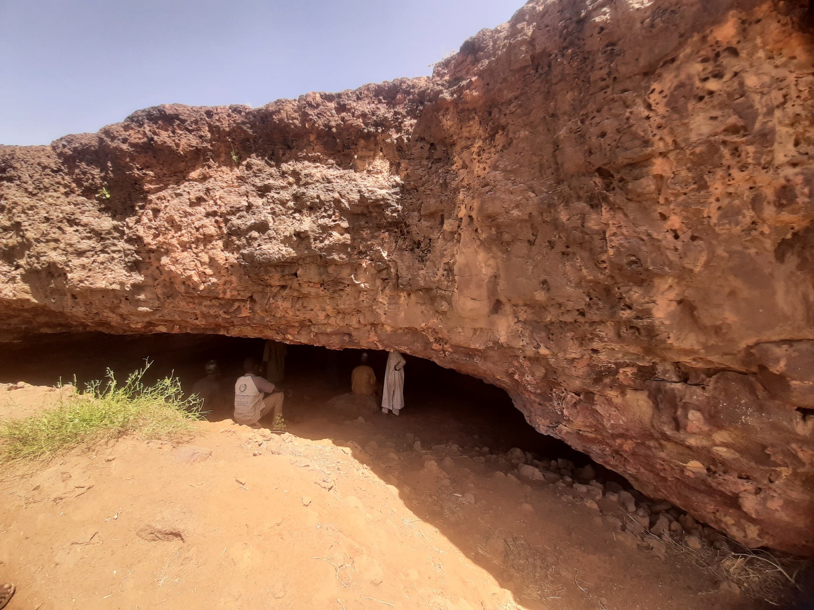
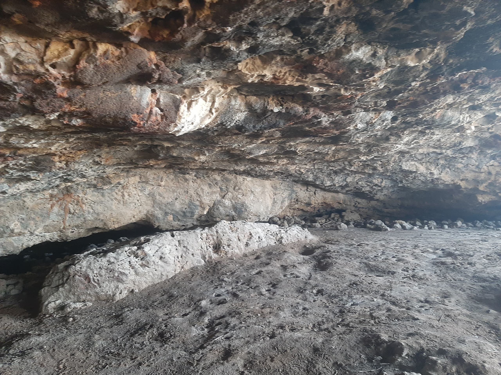
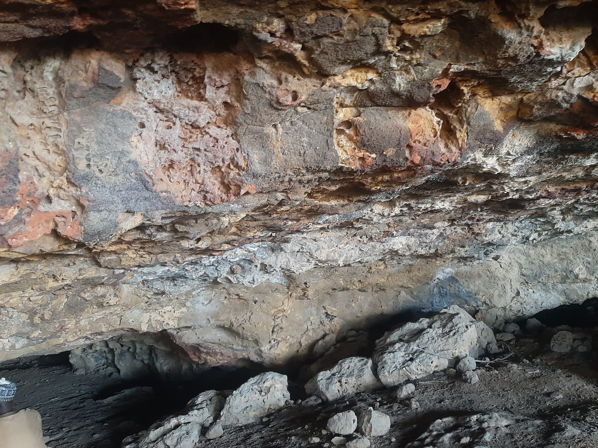
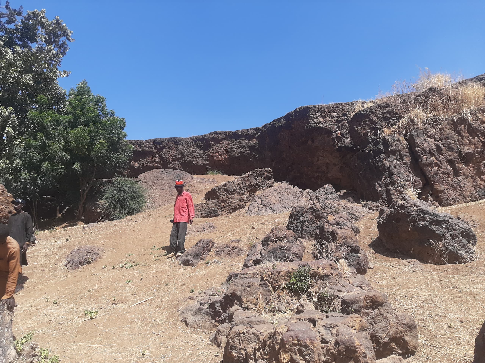
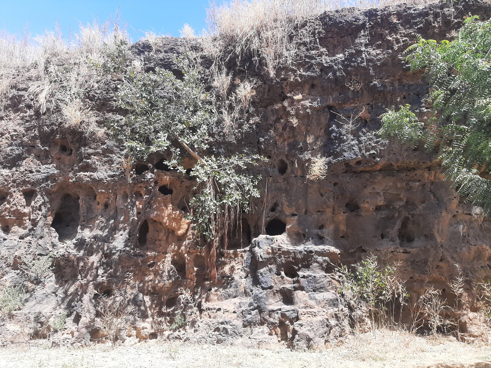
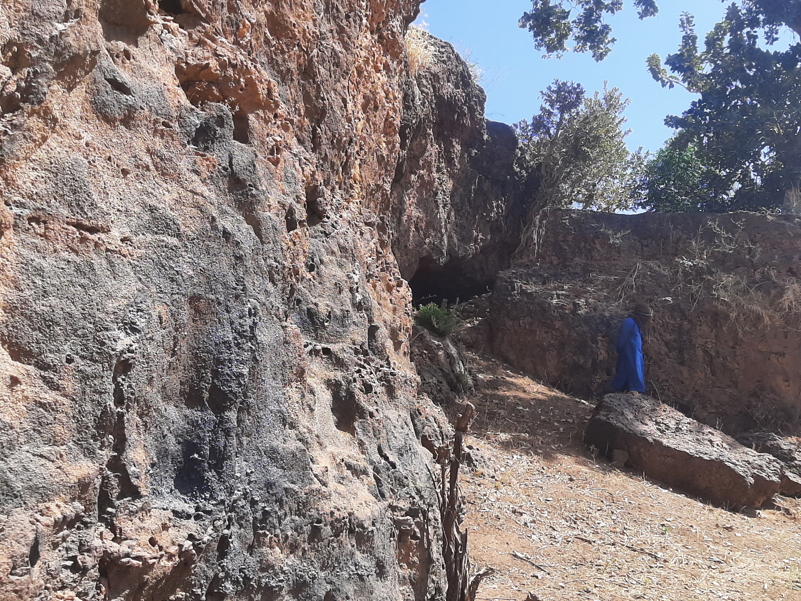
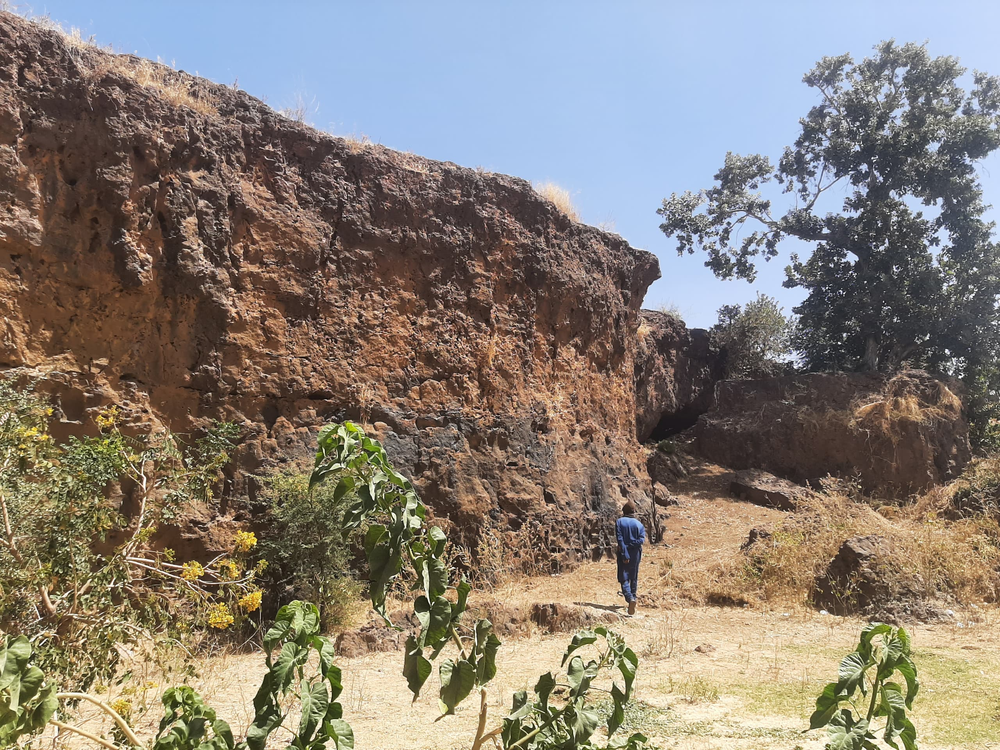

Welcome to our Tourist Destination
Explore the beauty of our city
GUJAM CAVE: A HAVEN OF RICH HISTORY AND CULTURAL DIVERSITY
Gujam Village, nestled in the heart of [State], has stood the test of
time, boasting an impressive history spanning over 130-years.
Strategically located approximately 7 kilometers east of Nangere Local
Government Area, this enchanting village is home to two distinct
tribes: the Kare-Kare and the Fulani. The Kare-Kare people comprise
80% of the population, while the Fulani make up 20%. According to
historical accounts, the Kare-Kare are skilled hunters and farmers.
Legend has it that they stumbled upon the nearby cave while hunting,
discovering it to be a habitat for hyenas and other animals. In a
remarkable display of coexistence, the Kare-Kare people developed a
unique, harmonious bond with the hyenas and other animals. Rather than
harming them,these creatures and the villagers formed a mutually
protective bond, fostering a harmonious relationship that has endured
for generations. The Gujam Cave steeped in history, having served as a
secret hideout for the ancestors of the Karai-Karai and Fulani's
during times of war. This natural sanctuary provided a safe refuge,
protecting them from harm and allowing them to strategize and regroup.
This extraordinary history of Gujam Village / Cave showcases the rich
cultural heritage and environmental stewardship of its people, making
it a fascinating destination for those interested in exploring the
intersection of nature and community.
Do try and Pay a visit to Nangere and "Explore the Uncharted", Its
worth the Tour!!.

The Entrance of the Cave.

People Sitted at the Entrance of the cave
The Inside View of the Cave
The Inside View of the Cave
The Surroundings of the Cave.
The Outside View of the Cave
The Second Entrance into the Cave
The Outside View of the Cave